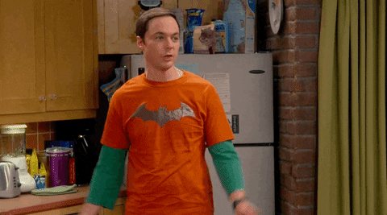
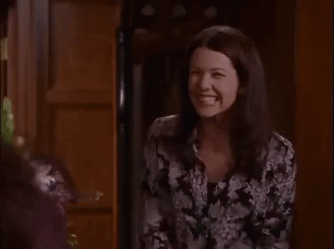

Friends
This tv show is one of the most timeless tv shows that has such a comforting and nostalgic feeling to it. Further on, each episode contained relatable moments which made this show a beloved staple in pop culture.


Here are people's reviews and thoughts on Friends!!
The big bang theory
What makes the big bang theory different from other shows is the fact that it has nerdy humor and geeky characters, and despite their social awakwardness you'd get to see how each of them had a huge character development
Here are people's review and thoughts on The big bang theory!!
Gilmore girls
Gilmore gilrs is a heartwarming show that captures the essences of the mom and daughter relationship, and how they depend on each other to get over hurdles, and how each episode will showcase how genuine their relationship is and how they get to enjoy each other's company.
Here are people's review and thoughts on Gilmore girls!!